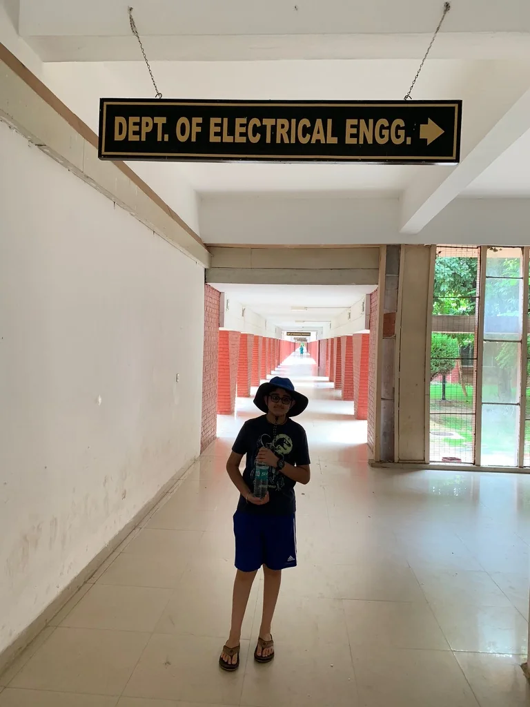

Away from the projects
About
me.
I'm Abhi. I like robotics, programming, designing things, and figuring out why something doesn't work.
I'm a student in Oakville, Ontario. I spend a lot of time with code, electronics and 3D printing, but that's not my whole life. I also enjoy the outdoors, collecting Transformers, spending time with friends and trying new things.

Taking things apart, putting them together.
I was interested in electronics before high school. I liked experimenting with speakers and other small builds, and eventually found robotics through FIRST. I've been part of FRC Team 1360 since 2022.
Engineering became a place where I could combine programming with something physical I could test, troubleshoot, and improve.

More than just projects.
When I'm not building something, I like getting outside on my bike, spending time with friends, and exploring places that catch my interest. Scouts has been a big part of my life, both for the outdoors and for the people I've met.
I've collected Transformers for years, and I've been into dinosaurs and paleontology since I was little. I like learning about all sorts of things, even when they have nothing to do with engineering.

For the technical side of things:
Explore my work ↗